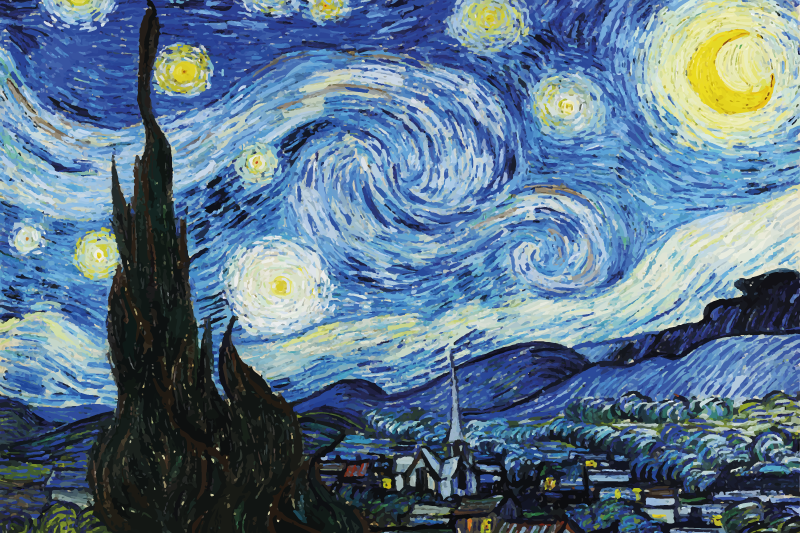

Bienvenue sur le profil de Léonie AUBERT!

Bonjour, je m'appelle Léonie, j'ai 18 ans. Je suis actuellement en école de commerces à la Défense et j'adore écouter de la musique, sortir avec des amies au musée ou aller faire les magasins.
Spotify🎵Ma passion pour la musique🎵
J'adore la musique, j'écoute à peu près tous les styles de musique à part le RAP, cela ne me ressemble pas. Les musiques que j'affectionne le plus sont les musiques douces. J'en écoute au moins deux heures par jour. C'est très pratique et agréable d'en écouter dans les transports en commun. L'album que j'aime le plus est "21" d'Adèle qui est ma chanteuse préférée. J'adore aussi l'album "No place in heaven" de Mika.
🎥Les programmes audios visuels🎥
Je trouve les programmes audiovisuels (les séries et les films) incroyables car ils nous permettent de nous évader dans d'autres univers. Cela nous permet pendant un moment de ne plus penser à des choses stressantes ou à certains problèmes. De plus, les films d'action sont impressionnants à regarder grâce aux effets spéciaux. Mon film préféré est "Kate" réalisé par Cédric Nicolas-Troyan et ma série préférée est "13 reasons why". J'aime énormément ces deux programmes car ils sont extrêmement bien fait et puissants.
🎨L'art🎨
Je trouve ça beau. J'aime bien en regarder au musée ou regarder des documentaires sur certaines peintures ou artistes, en apprendre plus sur les messages cachés des oeuvres. Je trouve ça passionnant. Mon artiste préféré est Vincent Van Gogh, c'est un peintre et dessinateur néerlandais. L'une de mes oeuvres préférées de ce peintre est "La nuit étoilée".
